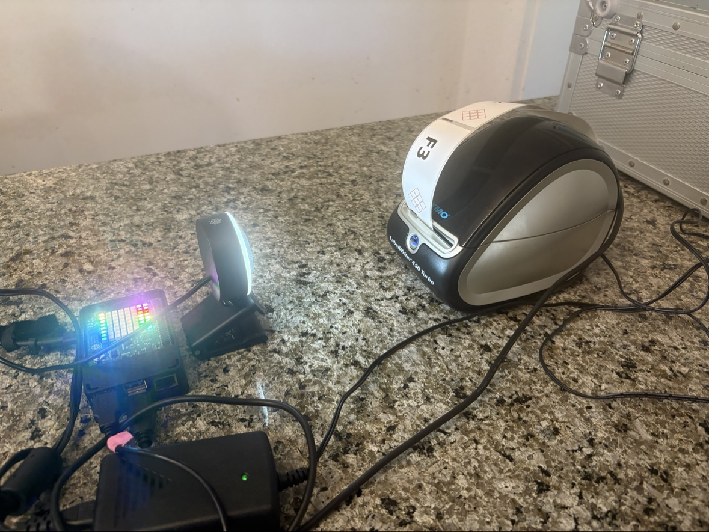

muse-print
Print text labels on a Dymo LabelWriter 450 Turbo from a Raspberry Pi —
with drift-free label registration, so back-to-back prints always land
exactly where the first one did.
pip install muse-print
muse-print "Giulia"The one-line summary
Normal Linux Dymo printing (dymoprint) positions the tear point by
counting blank lines from the host — and any tiny pitch error
accumulates with every label. muse-print instead ends each print with a
Form Feed (ESC E, 0x1B 0x45): the printer's firmware uses its own
label-gap sensor to find the next gap and stops exactly at the tear bar.
It's the USB equivalent of pressing the printer's physical button — and it
means every label starts from the same condition, no matter how many you
print in a row.
Start here
- Quickstart — install on a fresh Pi, print your first label
- The Journey — the full engineering story: the driver hunt, the drift, the camera, the breakthrough
- Drivers — what gets installed and why (Debian trixie gotchas)
- ESC E deep dive — the Form Feed discovery, in technical detail
- The camera loop — how a USB microscope camera made the printer observable
- Chemical labels — GHS hazard diamonds: pictograms, blackouts, and a compliant SLS label
- Browser label station — the whole label station as one HTML page: no Pi needed, prints to the Dymo over WebUSB
- Python API —
muse_printas a library
The setup

*The autonomous learning loop in action: Raspberry Pi 4 with Sense HAT
(rainbow LEDs) running the Muse Gadget, USB microscope camera aimed at the
Dymo LabelWriter 450 Turbo, with a freshly printed "F3" test label coming
out. Print, photograph, measure, adjust — without touching the printer.*
Status
- Tested on Raspberry Pi 4, Debian 13 (trixie), Dymo LabelWriter 450 Turbo (USB ID
0922:0021) - Camera-verified: 3 consecutive prints land identically
pip install muse-print— PyPI release pending